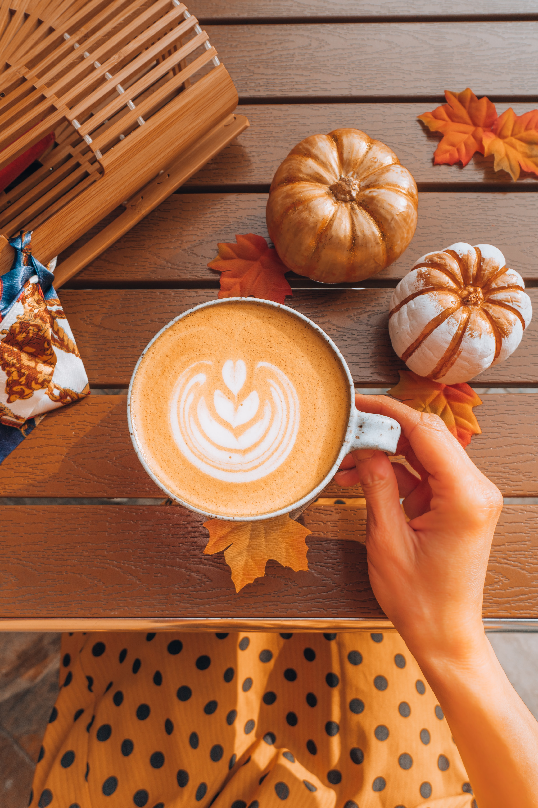

Pumpkin Spice Latte

Description
Oh yes, the classic! The one and only queen. Saved for last, since she is
the Queen of all drinks! Can enjoy all year, yet feel extra special and
enjoy this drink in Autumn!
Ingredients
- 1 Cup of Milk
- 1 Tablespoon Pumpkin Puree
- 1 Teaspoon of Pumpkin Spice
- 1 Tablespoon Sugar
- 1/2 Teaspoon Vanilla
Directions
-
Bring water, milk and chai spices to a simmer in a small saucepan on the
stove.
-
Add milk, pumpkin puree, and sugar to a saucepan over medium heat. Heat
until hot, but do not boil.
-
Remove the saucepan from the heat and whisk in the vanilla, pumpkin pie
spice, and the coffee.
- Divide the mixture between two mugs.
- Top with whipped cream and a sprinkle of pumpkin pie spice.
Jump to Top
Go Back